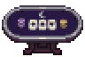
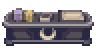
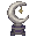
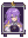

HOLOCRAWL · 고정지형 초안202
무나 · 문에이스
남보라색과 은빛 테두리로 꾸민 무나의 카드룸입니다. 양옆의 달 문양 테이블, 뒤쪽 칩 교환대와 무나 초상, 은빛 초승달 장식을 배치했습니다. 앞쪽은 보라색 대기석으로 꾸미고 가운데 두 칸 길을 비웠습니다.
도트 준비 중…
기존 벽에 붙인 배치독립 배치 · 사방 통로
15×13칸 · 카드 테이블 두 개 · 칩 교환대 · 입구2칸 양개문. 그림을 누르면2배로 확대됩니다.
새 도트 확대
달 문양 카드 테이블
칩 교환대
은빛 초승달
무나 초상
참고 자료와 재구성 범위
무나 공식 캐릭터의 보라색 머리·금빛 눈·별과 달 모티프를 참고했습니다. 원작의 문에이스 카드게임을 바탕으로 실내와 소품을 우리 게임용으로 재구성했습니다. 원작 건물 외형을 그대로 복제한 형태는 아닙니다.
시설 미술·배치 검토본입니다. 적·보상·카드게임 기능은 이후 단계입니다. 배치 검사 · 도트 목록